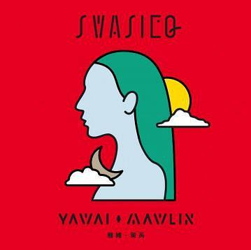

很久很久以前，天上有兩個太陽，當一個太陽下山時，另一個太陽就緊接著昇起，所以，當時沒有白天和黑夜的分別，兩個太陽輪流出現個不停，有許多人活活的被曬死。頭目非常生氣，就派了幾個勇士帶了弓箭和糧食，各背著一個小男孩，向東出發，找太陽報仇。其中一個勇士叫必勇，他沿途種下果樹的種子，好讓小孩長大時，有果樹指引回家的路。 必勇父子兩人翻越幾十座山，不知道經過了多少年，兒子也已長大了，有一天，終於找到了太陽居住的地方，於是趕快拿起弓箭向太陽射去，結果卻只射到太陽的一隻眼睛，太陽用一隻手壓著被射傷的眼睛，用另一隻手捉住了這一對父子，很生氣的問：「你們為什麼要用箭射傷我的眼睛呢？」他們回答說：「因為你曬死了我們許多族人，我們要報仇。」太陽嘆氣說：「你們真是忘恩負義的東西，你們的生活都依靠我，但你們從來沒有感謝過我，所以你們的族人才會被曬死，這都是你們自己招來的禍害！但你們受的苦難也足夠了，以後我就變成月亮，你們回家後要告訴族人，在月圓的時候要祭拜我，這樣你們的穀物一定豐收，人口也會興旺，現在我給你們雞和小米的種子，雞用來報時，小米用來祭祀。」太陽說完，兩人就向它告別，當初種的果樹也已經長大，他們就依照果樹的方向回家，當他們回到家鄉時，父親已變成駝背的老人，兒子也已滿頭白髮，他們把征代太陽的經過詳細的向族人說明，並且將月亮交待的事報告給族人。 從此以後，布農族人以－從月亮帶來的小米播種，以月亮的圓缺作為耕種和舉行祭祀的依據。

很久很久以前，天上有兩個太陽，當一個太陽下山時，另一個太陽就緊接著昇起，所以，當時沒有白天和黑夜的分別，兩個太陽輪流出現個不停，有許多人活活的被曬死。頭目非常生氣，就派了幾個勇士帶了弓箭和糧食，各背著一個小男孩，向東出發，找太陽報仇。其中一個勇士叫必勇，他沿途種下果樹的種子，好讓小孩長大時，有果樹指引回家的路。 必勇父子兩人翻越幾十座山，不知道經過了多少年，兒子也已長大了，有一天，終於找到了太陽居住的地方，於是趕快拿起弓箭向太陽射去，結果卻只射到太陽的一隻眼睛，太陽用一隻手壓著被射傷的眼睛，用另一隻手捉住了這一對父子，很生氣的問：「你們為什麼要用箭射傷我的眼睛呢？」他們回答說：「因為你曬死了我們許多族人，我們要報仇。」太陽嘆氣說：「你們真是忘恩負義的東西，你們的生活都依靠我，但你們從來沒有感謝過我，所以你們的族人才會被曬死，這都是你們自己招來的禍害！但你們受的苦難也足夠了，以後我就變成月亮，你們回家後要告訴族人，在月圓的時候要祭拜我，這樣你們的穀物一定豐收，人口也會興旺，現在我給你們雞和小米的種子，雞用來報時，小米用來祭祀。」太陽說完，兩人就向它告別，當初種的果樹也已經長大，他們就依照果樹的方向回家，當他們回到家鄉時，父親已變成駝背的老人，兒子也已滿頭白髮，他們把征代太陽的經過詳細的向族人說明，並且將月亮交待的事報告給族人。 從此以後，布農族人以－從月亮帶來的小米播種，以月亮的圓缺作為耕種和舉行祭祀的依據。

從前，在特富野部落，有一對很相愛的男女，男的名字叫巴蘇亞，女的叫山美。每天傍晚，都可以看見他們手拉著手在散步。可是，有一天，巴蘇亞生重病去世，山美十分傷心，常常一個人難過的唱著他們以前常唱的情歌。 有一次，當山美又在傷心的唱歌的時候，突然看見死去的巴蘇亞就站在她的面前，她非常驚喜。巴蘇亞牽著她的手，走到塔山的一個洞穴前，進去以後，山美發現這裡住著許多人，於是，她就和巴蘇亞一起生活在這裡。每隔一段時間，她就會帶著糯米酒回家探望，山美的家人聽她說是和巴蘇亞在一起，覺得很奇怪，但是看到她又恢復以往的快樂，所以也沒有過問，只是偷偷跟在後面，確定她平安才離開。日子一久，山美的家人也習慣了，有時候還會帶些酒放在洞口旁邊給她。 過了幾年，山美生了一個漂亮的小寶寶，她帶著巴蘇亞高高興興的抱著小孩回家探望家人。山美的媽媽特地煮了一桌好菜，吃飯時，只聽見談笑聲，看得見杯盤碗筷移動，桌上的好菜也都被吃光光，可是就是看不見巴蘇亞的人影。更奇怪的是，小寶寶抱在媽媽手裡是正常的嬰兒，一抱到外婆的手裡就變成了樹根。 要回塔山的時候，山美跟父母說：「這是我最後一次回來。如果有一天，你們看見塔山的山壁上掛著這件穿在我身上的白衣，就表示我已經死了。」不知道過了多久，部落裡的人真的看見一件白色的衣裳掛在塔山的山壁上，山美永遠和她所愛的男子在一起了。據說，那件白色的衣裳，到現在還掛在那兒呢！

巴嫩出生在頭目的家庭，長得美麗動人且歌聲清亮如黃鶯。有一天，好奇的巴嫩，跟隨耕作的婦女們上山，卻在樹林裡迷路了。忽然聽見遠方傳來悠悠的笛聲。當笛聲漸漸清楚的時候，巴嫩眼前站著一位非常英俊的青年，「啊！... ...你是誰？」「巴嫩公主，我是蛇族的青年，我的祖先犯了戒條，受到詛咒，被貶為蛇族。你將是我的妻子，所以，你看得到我的原形... ...」 從此以後，巴嫩常常到山裡去會蛇郎。有一天，蛇郎帶了一群人到巴嫩的門外高唱求婚的歌。巴嫩家族的人一看，竟是一條條的百步蛇，大家都嚇壞了。但是巴嫩堅持一定要嫁給蛇族，疼愛巴嫩的父母只好傷心地答應了。 迎娶當天，蛇族浩浩蕩蕩的來到了巴嫩家門口，長老高唱迎親的歌，聘禮一樣也不少。母親含著眼淚，把巴嫩打扮得漂漂亮亮的，他的姐妹和兒時的玩伴，都來為她送嫁。 黃昏時，送嫁的隊伍舉著熊熊的火把，護送巴嫩來到深山的鬼湖邊，巴嫩公主回頭對著家人說：「親愛的爸爸、媽媽，我會守護這個地方，你們來這兒狩獵，一定會有獵物，但是，如果獵物是冰冷的，請不要帶回去。」說完以後，巴嫩隨著蛇郎走入湖中，幾天以後，湖邊的岸上長滿了百合花。一直到今天，魯凱族人，尤其是女人，都喜歡在頭飾上，插上一朵百合花，紀念她們心中永遠難忘的巴嫩公主。

傳說有一天，天神化作孔雀王子到人世間來遊玩，他覺得世界真美麗，於是他決定到世界各地去看一看。有一天，他不知不覺沿著溪流走進充滿神祕色彩的排灣族部落，他好奇得到處逛。突然，他見到一位眼睛很大的女子正在溪邊洗衣服，他傻傻地注視她，過了一會兒，女子走了，他才驚醒。心生愛意的孔雀王子，於是決定娶這位美麗的女子為妻。打聽之下，才知道這氣質非凡的女子竟是頭目的女兒穆莉淡。 孔雀王子想了想：「我是－個神，應該要怎麼介紹我自己給他們認識呢？聽說排灣族是非常講求門當戶對的？」但是，孔雀王子終究還是抗拒不了愛情的力量，於是常常在穆莉淡外出的時候，和她說話。慢慢地，兩個人就開始交往。孔雀王子鼓起勇氣向穆莉淡求婚，雖然穆莉淡很開心，但是她必須得到家人的同意。於是孔雀王子選了一個好日子，到穆莉淡家提親，請求頭目答應他們的婚事。頭目和家族的長者經過一陣討論之後，果然還是捥拒了孔雀王子。孔雀王子雖然傷心沒有得到大家的祝福，但仍然不放棄，於是振翅飛向天際，此時羽翼間撒下了一顆顆美麗的琉璃珠當作聘禮，並在同時帶著公主消失在彩虹的另一端。 因此，傳說中的琉璃珠又稱為「孔雀珠」，是排灣族人最珍視的珠寶。
卑南族人對他們祖先的由來，可分「石生」和「竹生」。
「石生」的傳說是
卑南族人相信祖先是由巨石裂開所生的。
遠古時代，在今天台東知本里海岸附近，有一塊巨石。一天，巨石裂開出現了一名女子，她的眼睛長在膝蓋上，之後，她的腳後跟腫大起來，竟然懷孕了，不久，生了一個女兒。這個女孩長大後，遇到了因洪水逃難的男子，兩人相愛於是結為夫妻，他們就是後來卑南族的祖先。
「竹生」的傳說是
卑南族人祖先是由竹子所生。
遠古時候，在今天台東縣太麻里鄉美和村的地方，出現一名女神，她右手捧著石頭，左手握著竹子。女神把右手的石頭丟到地上，土地裂開跳出了一個人，就是後來阿美族的祖先。女神再把左手的竹子豎立在地上，竹子的上節裂開，出現一名女神，下節也蹦出來另一名男神。這一對男女神就是後來卑南族的祖先。
很久以前，部落裡有兩個非常優秀的青年勇士－古拉斯和卡爾照，他們口才好，打獵技巧高超，對於傳統的舞蹈及歌曲，也能琅琅上口。可是，二人個性完全不同，古拉斯性情雖剛烈，但古道熱腸，卡爾照溫文有理，沉默寡言，都是多數族人心目中最理想的未來頭目人選。 兩人同時喜歡一個名叫少瑪拉的姑娘，但是傳統法律裡一妻不事二夫，該如何是好呢？於是古拉斯提議「比武招親」，卡爾照同意後，便向當時頭目提出請求，請頭目擔任監考官，這件事傳遍了整個部落，大家扶老攜幼，競相前往比武場地聚集。比賽開始後，無論是賽跑或是射箭...等，兩人都是平手，最後聰明的頭目想出一個比賽－「撐竿跳」，誰能撐越過深澗溪谷，誰就可以娶回少瑪拉！觀看的鄉親開始議論紛紛誰勝誰負，但這一項目實在太困難了，一不小心可能要人命，所以大家都不敢肯定誰會過關。 此時觀看的群眾面向溪谷，人人冒著冷汗頻頻顫抖，古拉斯望了一下河谷，心想一定過不了，於是向頭目說：「我肚子痛能不能先上茅坑，讓卡爾照先過吧！」，頭目不疑有他，答應了。原來古拉斯暗藏詭計，心想：「萬一不能跳過的話一定會死去，不如先讓卡爾照去吧，等卡爾照死了，我就可以順理成章地成為少瑪拉的丈夫了」。老實的卡爾照只好先拿起竹竿，向天神誠心祈禱：「讓我有勇氣躍過溪谷吧！」天神似乎聽見了卡爾照的祈求，就在不可能越過的那一瞬間，一道五彩光芒照亮了整個山谷，萬丈光芒投射在卡爾照身上，不知名力量順勢推了他一把，卡爾照竟然輕輕地飄過了深谷，這一幕大家都看傻了，原本鴉雀無聲的會場，一時間歡聲雷動，喝采聲久久不絕於耳，古拉斯看到這種情景，無奈的跌坐在石頭上，心想結束了。 頭目報告比賽結果，將少瑪拉許配給了卡爾照，卡爾照告訴少瑪拉：「其實這次的比賽，天神可能聽到了我的祈求，助我一臂之力，才讓我順利跳過溪谷，為了感謝天神的幫助，請妳幫我做一件七彩的布裙，當作紀念。」於是少瑪拉日夜趕工，在結婚前完成了彩虹色布裙。後來，整個部落也跟著織出同樣的布裙，如虹彩般的「七彩」順理成章的成為部落特別標記，而卡爾照也成為家喻戶曉的頭目。
南投縣仁愛鄉賽德克族有這樣一個傳說，相傳中央山脈有顆巨大的白石，賽德克族人稱Rmdax tasing，意思是發亮的石頭，是賽德克族祖先發源的地方，而且這個白石山區也是賽德克族族人狩獵的獵區。 當他們在中央山脈打獵的時候，白石就像是護佑著賽德克族的靈石，因為它高高在上，如同一盞燈塔，隨時指引賽德克族人們的腳步，使族人不致迷失在廣大的中央山脈中。 所以，白石山，不只是賽德克族的獵區，也是賽德克族的聖山，因為裡面有賽德克族的神石：白石Rmdax tasing。而這白石Rmdax tasing，像飛來石插在山崖上，遠看，好像牡丹花的花苞，所以，又稱牡丹岩。


|
專輯
|
演唱者
|
工作室
|
||
|---|---|---|---|---|
|  |
斯瓦細格
|
雅維·茉芮
|
好哦工作室
|
|

|
Voyage
|
CMO樂團
|
藤音樂工作室
|
|

|
vavayan女人
|
阿爆
|
十一音像有限公司
|
|

|
洄游
|
吳昊恩
|
風潮音樂國際股份有限公司
|
|